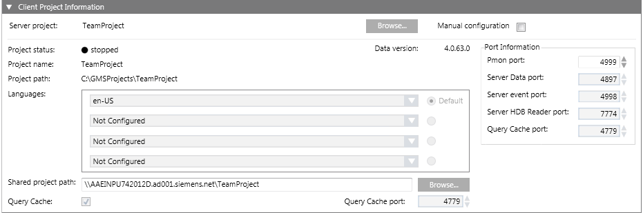
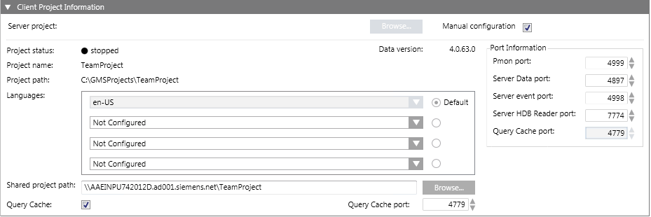

Client Project Information Expander
The ClientProject Information expander allows you to configure the details for the selected Server project on the configured Server.
The parameters, for example, languages and the port numbers for Server Data, Server Event and Server HDB Reader ports on the Client/FEP must match the corresponding parameters of the selected Server project. Otherwise the Installed Client does not launch.
The ClientProject Information expander is enabled either when you select the Manualconfiguration check box or when you click Browse and select a Server project in Automatic configuration mode.



NOTE 1:
In the entry fields of the management platform,
- You can use UTF-8 characters and 7-bit ASCII characters in the file or project names and paths. However, blank spaces and special characters including \\, ;, /, \, :, , =, ^, &, *, ?, “, <, >, |, @, [, ], {, }, $, !, %, ., (, ), ‘ “ ‘, \t are not permitted.
- You must not use any characters other than A through Z, numbers 0 through 9, and a hyphen (-).
- Forward and backward slashes (/ and \) can only be used to separate the names of directories.
- According to WinCCC OA 3.19 Help: Umlaut ("ä","ö", "ü") - cause problems during online backup.
NOTE 2:
If the installation path (shown in the Project path field) includes certain illegal character sequences, for example, #&, ~^, ~&, ~(, ~=, `^, `&, `(, !^, !&, !( this will not be detected by the Installer. However you will not be able to launch the System Management Console. Similarly, if you include illegal characters in the Project Name field while creating a project in the SMC, you cannot create the project.
Item | Description |
Server Project | (Configurable only in Automatic configuration mode) Displays the selected Server project name, if already configured by clicking the Projects button of the Server Information expander. Otherwise, click Browse to select the server project using the Projects Information dialog box. |
Manual configuration | By default, this check box is cleared. When selected, it enables the remaining fields of the ClientProject Information and the CommunicationSecurity expander of the Project Settings tab allowing you to manually enter the server project details. You cannot edit the Service port in Manual configuration mode. |
Project name | Enabled only in Manual configuration mode. |
Project path | Enabled only in Manual configuration mode. |
Languages | Enabled only in Manual configuration mode. |
Default | Enabled only in Manual confugration mode. |
Pmon port | Enabled only in Manual configuration mode. |
Server Data port | Enabled only in Manual configuration mode. |
Server Event port | Enabled only in Manual configuration mode. |
Server HDB Reader port | Enabled only in Manual configuration mode. |
Shared project path | In Automatic configuration mode it is only enabled, when you select the Server project. It allows you to type the shared Server project path of the Desigo CC server. |
Query Cache | Displays the configuration for Query Cache as per the selected Server project selected. In Automatic configuration mode, you cannot edit it. |